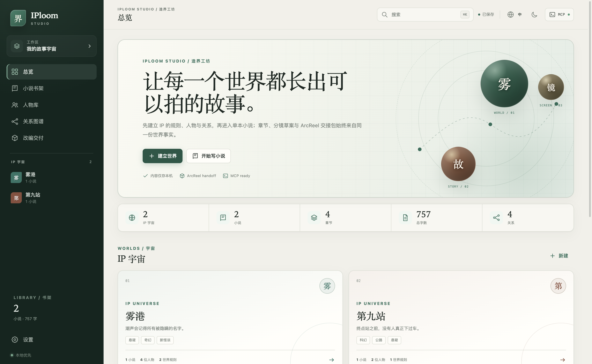
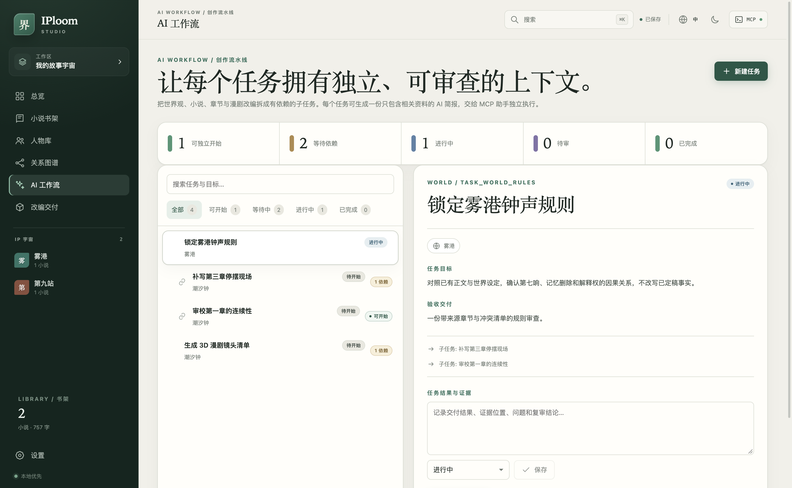

世界观与设定集
集中维护世界简介、规则、历史、文化、技术、势力和地点，让角色的行动有明确边界。
- 多个故事宇宙独立管理
- 设定、地点与作品相互关联
- 中文与英文内容字段
YOUR STORIES. ONE CONNECTED WORLD.
从一段小说，到有记忆的人物、有逻辑的关系、有连续性的场景。
让每一份创作，都成为下一部漫剧的制作资产。
可下载版本：0.6.0。小说导入、模型执行、服装提示词与制作流程均已包含在 0.6.0 安装包中。已有工作区会在首次打开时自动迁移到 schema v7。查看发行记录 ↗
A HOME FOR YOUR IP
小说、人物、设定与改编资料共享引用。
每一次写作，都在积累可复用的 IP 资产。
集中维护世界简介、规则、历史、文化、技术、势力和地点，让角色的行动有明确边界。
从外貌、性格、动机、缺陷、秘密到声音，保留人物的完整设计；用关系网络理解冲突。
正文、大纲、剧情节拍、视角、出场人物和改编备注一起管理，保留写作与制作的联系。
查看“正在设计人物服装”“正在创作章节”的任务名称与实时产出，保留提示词编辑和作者审阅。
把抽象创意转换成具体制作规格：身份连续性、服装变体、空间布局、镜头调度与声音。
将创作资料交给后续制作工具。导出保留来源修订与哈希，本地 MCP 读写同一份工作区。

工作区总览。浅色纸面与深绿侧栏，让故事资产有一个安静的工作空间。
FROM MANUSCRIPT TO PRODUCTION
新版制作流程 · 自动执行由你发起，完成由你确认。
TXT、Markdown 或粘贴正文；先预览章节拆分，保留原文和章节标题。
交付：小说 + 章节模型分段分析人物、地点、组织、设定、方向性关系与场景，附原文引用。
交付：可审阅的资产草案将世界、人物、服装、场景与分镜拆成任务，带入相关设定及已完成设计。
交付：设计稿 + 提示词核对人物身份、空间与剧情连续性；已完成设计进入带哈希的改编包。
交付：可追溯的制作资料先选中章节与人物，确认人物设计，再设计雨夜服装与旧城街道，最后制作分镜。服装任务会引用前置人物设计；分镜任务会引用已完成的场景设计。
流程示意，非实时任务状态。当前版本生成文字规格与提示词；图片、视频、配音和成片由下游工具制作。
CONTEXT-AWARE PROMPTS
选择对象 → 自动带入上下文 → 编辑 → 复制或执行。
固定身份与风格，给创意留出空间。
规则、历史、地理、组织与未解之谜；区分既定事实和新提案。
章节目标、视角、人物动机、剧情顺序与伏笔；生成正文和连续性备注。
身份、轮廓、外貌、性格、声音与三视图提示词；明确固定特征。
场合、材质、颜色、层次、配饰、磨损与变体；保持脸和身体一致。
关系方向、动机、明暗状态、演变与章节证据；不把同场出现当作关系。
地理、入口、比例、布局、道具、光照和色彩；维护空间连续性。
时间、地点、人物、服装状态、目标冲突、动作节拍、对白和过渡。
景别、镜头运动、调度、时长、对白、图像提示词、视频提示词与负向约束。
核对剧情、关系、服装、地理与镜头；列出证据、问题等级与修复建议。
默认改编方向：风格化 3D 动画。模板要求非写实、非真人，并持续保持人物身份与服装连续性。
GET STARTED
下列导入与模型步骤适用于 0.4.0 及以后版本，也可以先手动创建世界、小说、人物与工作流。
下载对应系统安装包。先探索示例世界，再创建自己的故事。设置页可查看数据目录与 MCP 配置。
新版在“小说书架 → 导入已有小说”选择 TXT/Markdown。其他格式先导出 UTF-8 文本。检查标题和章节预览，再决定是否使用 AI 分析。
桌面“设置 → 模型 API”填写兼容 Chat Completions 的基础地址、模型 ID 和密钥。支持 HTTPS，或回环 HTTP 本地模型。配置只在当前会话有效。
分析结果中的名字、别名、关系方向与原文依据都需要核对。制作台可建立六阶段依赖任务，也可以独立创作章节或地点。
查看实时输出、编辑草案、保存审阅修改。前置任务标记“完成”后再执行下一步。场景与镜头的结构化内容在章节编辑区维护。
选择作品与章节，导出 ArcReel 资料。新版的已完成制作设计随包输出；待审结果不会混入已审设计清单。

工作流界面。任务状态、依赖关系、任务简报与结果编辑区集中在同一页。
MAKE ROOM FOR YOUR NEXT WORLD
当前发行版 0.6.0 · macOS 与 Windows。小说导入、模型执行与制作流程均已包含。
Universal · Apple silicon + Intel
下载 DMG ↓下载 ZIP 版本 ↗x64 · 安装程序
下载 EXE ↓查看全部发行文件 ↗0.6.0 安装包未签名。请从此仓库下载，并核对 SHA256 校验和；macOS / Windows 可能显示来源提示。
GOOD TO KNOW
它是连接两者的 IP 制作工作台：维护故事事实来源，把小说、人物、服装、场景、分镜与提示词组织成可追溯的资料。当前不内置图片、视频或最终成片渲染引擎。
不会。导入分析要经过审阅；制作任务结果保存到工作流待审区。作者确认后再更新正文或结构化资产。
可以配置兼容 Chat Completions 的回环 HTTP 服务。远程服务必须使用 HTTPS；具体模型需要支持所需上下文与输出格式。不同提供商的兼容性需要实际验证。
模型可能把别名当成新人、把同名人物合并，或误判关系。系统检查精确原文引用与引用完整性，但无法代替作者判断。审阅阶段可编辑提取结果。
本地 MCP 客户端可列出世界和小说、读取章节、搜索设定、读取关系图、工作流简报与故事时间线，并可新建或修订时间线事件、登记基础规则、导出 ArcReel 包。查询工具保持只读；写入与导出只在明确工具调用时发生。
克隆仓库，按 开发说明 安装仓库指定的 Bun / Node，执行 bun install --frozen-lockfile 和 bun run dev。源码运行不依赖安装包，适合参与开发或验证未发布改动。
0.4.0 兼容读取原有工作区，并在首次打开时自动迁移到 schema v7。升级后旧版 0.3.0 无法读取新工作区，也无法读取超过旧 500 字符限制的任务内容。降级前保留独立备份。